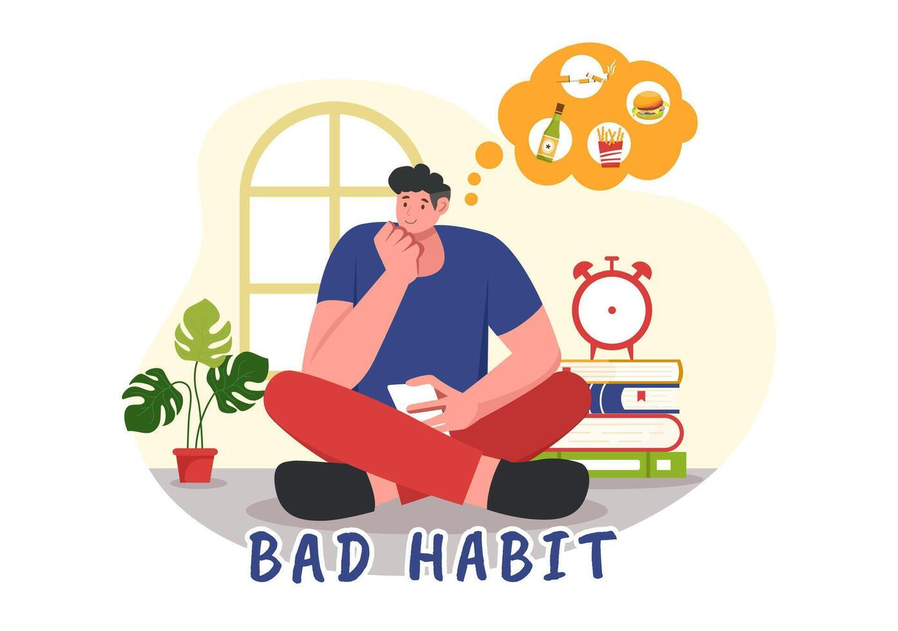

တစ်ခုခုကို စွဲလမ်း တတ်တဲ့သူတွေက မကောင်းမှန်း သိပေမယ့်လည်း ဖြတ်ဖို့၊ ရပ်ဖို့ ခက်ကြပါတယ်။ ဒီစွဲလမ်းမှုရဲ့ နောက်ကွယ်မှာ သူတို့ကို မရပ်နိုင်လောက်အောင် ဆွဲဆောင်နိုင်တဲ့ အရာတစ်ခုခု ရှိနေလို့ပါ။ ဒါကြောင့် ဆက်လုပ်ရင် ကိုယ့်အတွက် မကောင်းဘူးဆိုတာ သိပေမယ့် ရပ်တန့်မရဘဲ စွဲလမ်းနေတာပါ။ စွဲလမ်းမှုတွေထဲမှာ ရုပ်ဝတ္ထုတစ်ခုခု (ဥပမာ - အရက်) ကို စွဲလမ်းတာရှိသလို အပြုအမူတစ်ခုခု (ဥပမာ - လောင်းကစား) ကို စွဲလမ်းတာမျိုးလည်း ရှိပါတယ်။
လေ့လာချက်တွေအရ စွဲလမ်းမှုတွေ အားလုံးမှာ တူညီတဲ့ ဖြစ်စဉ်တွေကို တွေ့ရပါတယ်။ ဦးနှောက်ထဲမှာ ရှိတဲ့ "ဒိုပါမင်း" လို့ ခေါ်တဲ့ ဓာတုပစ္စည်းနဲ့အတူ ဆုလာဘ်ရခြင်း၊ ထပ်လုပ်ချင်အောင် တိုက်တွန်းမှု စတဲ့ ဦးနှောက်အစိတ်အပိုင်းတွေနဲ့ ပတ်သက်ပါတယ်။ ဒီလိုနဲ့ စွဲလမ်းစေတဲ့ ကိစ္စတစ်ခုကို စိတ်အားတက်ကြွလာပြီး၊ ဦးနှောက်ရဲ့ အရှေ့ပိုင်းက ထပ်ခါထပ်ခါ လုပ်ချင်အောင် လှုံ့ဆော်လာပါတယ်။ ကိုယ့်ရဲ့ စိတ်အာရုံ ဒီရုပ်ဝတ္ထု ဒါမှမဟုတ် အပြုအမူမှာပဲ နစ်မြုပ်လာပါတယ်။ ထူးခြားတာက စိတ်စွဲလမ်းမှုကို ကုသလိုက်တယ်၊ ဖြတ်လိုက်တယ် ဆိုရင်တော့ ဒီဦးနှောက်ပြောင်းလဲမှုတွေက ပြန်ပြီး ကောင်းလာတာကို တွေ့ရပါတယ်။
ရုပ်ဝတ္ထုတစ်ခုခု ဒါမှမဟုတ် အပြုအမူတစ်ခုခုကို စွဲလမ်းတဲ့အခါ "မလုပ်ရ မနေနိုင်" ဆိုတဲ့ လက္ခဏာ ပေါ်လာပါတယ်။ ဆေးပညာအရ တစ်ခုခုကို စွဲလမ်းတယ်လို့ ပြောဖို့အတွက် အောက်ပါအချက်တွေထဲက အနည်းဆုံး ၂ ချက် ရှိရပါမယ်။
✅ လိုတာထက်ပိုပြီး ရုပ်ဝတ္ထုတစ်ခု ဒါမှမဟုတ် အပြုအမူတစ်ခုကို အချိန်ကြာကြာ၊ ပမာဏများများ၊ အကြိမ်ရေများများ လုပ်ထားတာ။
✅ ဖြတ်ဖို့ ကြိုးစားပေမယ့် မအောင်မြင်တာ။
✅ ဒီစွဲလမ်းနေတဲ့ အလုပ်ကို လုပ်ဖို့ အချိန်အတော်ပေးရတာ။
✅ ဒီရုပ်ဝတ္ထု ဒါမှမဟုတ် အပြုအမူကို ဆက်လုပ်ဖို့ ပြင်းပြတဲ့ စိတ်ဆန္ဒရှိနေတာ။
✅ ဒါတွေကို လုပ်ဖို့ အလုပ်တွေ၊ ကျောင်းတွေ ထိခိုက်တာ။
✅ ဒီစွဲလမ်းမှုကြောင့် လူမှုရေး ပြဿနာတွေ ကြုံရပေမယ့် ဆက်ပြီး လုပ်ချင်နေတာ။
✅ ပုံမှန်လုပ်နေကျ အလုပ်တွေ၊ အနားယူတာတွေ၊ လူမှုရေးကိစ္စတွေ ပျက်ကွက်လာတာ။
✅ ကိုယ့်ကို အန္တရာယ်ဖြစ်စေတဲ့ အချိန်မှာတောင် ဆက်လုပ်မိနေတာ။
✅ ရုပ်ပိုင်းဆိုင်ရာ၊ စိတ်ပိုင်းဆိုင်ရာ ထိခိုက်နိုင်တယ်ဆိုတာ သိလျက်နဲ့ ဆက်လုပ်နေမိတာ။
✅ ယဉ်ပါးလာတာ (ဥပမာ - အရက်စွဲတဲ့သူဆိုရင် မသောက်ရရင် ယင်းထတာ၊ မူးဖို့ ပမာဏတိုးရတာ)။
✅ ရုတ်တရက် ရပ်လိုက်ရင် အစိမ်းဖြတ်တဲ့ လက္ခဏာတွေ ပေါ်လာတာ။
ဘယ်လောက်တောင် ပြင်းပြင်းထန်ထန် စွဲလမ်းနေလဲဆိုတာကတော့ ကိုယ့်မှာ ဘယ်နှချက်ကိုက်ညီနေလဲနဲ့ ဆုံးဖြတ်နိုင်ပါတယ်။
✔ ၂-၃ချက် - သိပ်မဆိုးသေးပါဘူး။
✔ ၄-၅ချက် - အသင့်အတင့် စွဲလမ်းမှုအဆင့်။
✔ ၆ချက်နဲ့အထက် - တော်တော်ဆိုးတဲ့ အခြေအနေလို့ ပြောလို့ရပါတယ်။
လေ့လာချက်တွေအရ လူတစ်ယောက်က ဘာကို စွဲလမ်းသွားမယ်ဆိုတာ ခန့်မှန်းလို့ မရနိုင်ပါဘူး။ တစ်ဖက်က ရုပ်ဝတ္ထု၊ အပြုအမူရဲ့ ဆွဲဆောင်မှုနဲ့လည်း ဆိုင်ပါတယ်။
✅ မျိုးဗီဇ - စွဲလမ်းမှုတွေရဲ့ တစ်ဝက်လောက်က မျိုးဗီဇကြောင့်ဖြစ်နိုင်ပါတယ်။
✅ ဇီဝကမ္မ - ဥပမာ - အသည်းအင်ဇိုင်းပမာဏက အရက်စွဲမှုအတွက် အရေးကြီးပါတယ်။
✅ ကျား/မ - အမျိုးသားတွေက အမျိုးသမီးတွေထက် စွဲလမ်းမှု ပြဿနာတွေ ဖြစ်လွယ်တယ်။
✅ ကိုယ်ရည်ကိုယ်သွေး - စိတ်မထိန်းနိုင်ဘဲ မြန်မြန်ဆန်ဆန် လုပ်တတ်သူတွေ စွဲလမ်းမှုဖြစ်နိုင်မှု များသည်။
✅ စိတ်ထိခိုက်ဒဏ်ရာ - ငယ်ငယ်လေးနဲ့ စိတ်ဒဏ်ရာတွေ ရနေခဲ့ရင် မူးယစ်ဆေးတွေနဲ့ ဖြေရှင်းတတ်ကြသည်။
✅ စိတ်ရောဂါ - စိတ်ကျရောဂါ၊ အာရုံမစူးစိုက်နိုင်တာစတဲ့ ပြဿနာတွေကလည်း စွဲလမ်းမှုကို ဖြစ်စေတတ်သည်။
စွဲလမ်းမှုတွေက မကောင်းတာကို သိလျက်နဲ့ ရပ်မရဘဲ ဆက်လုပ်နေရတဲ့ အကြောင်းရင်းတွေအများကြီးရှိပါတယ်။ ဒါကို ဖြေရှင်းဖို့ လူမှုရေးအကူအညီနဲ့အတူ ကိုယ့်ကိုယ်ကို ခိုင်မာစွာ ထိန်းချုပ်ဖို့ လိုအပ်ပါတယ်။